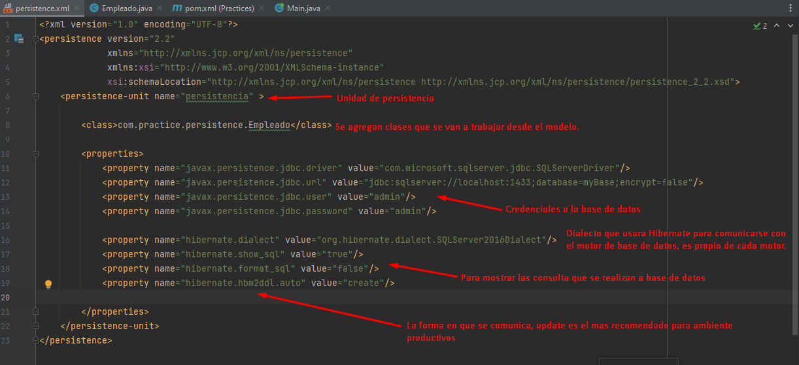

Conceptos Básicos
Conocido como el java pesistence application, sirve para trabajar con base de datos de una forma mas limpia.


Configuración
Ya que JPA solo es la interface que ofrece java para trabajar persistencia con base de datos, es necesario tener un proveedor de persistencia como HIBERNET, para ello descargamos la depencia de hibernet-core y el jdbc connector para que hibernet pueda gestionar la conexión con base de datos
Con las depencias instaladas se debe agregar el archivo persistence.xml en el path del proyecto que es en la carpeta resources, este archivo lleva las etiquetas necesarias para que el proveedor jpa pueda interactual con la base datos.
